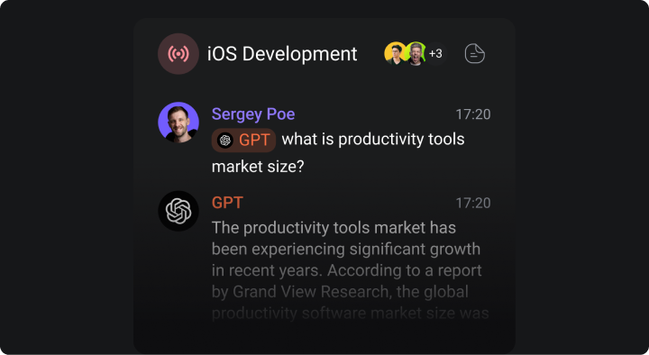

Leading AI Productivity Tools in 2025
There are so many AI tools that it's easy to get FOMO these days. But which of them enhance productivity?
Staying productive is a real challenge. Enter AI productivity tools — a game-changer for individuals and teams looking to save time, stay organized, and work smarter. From automating mundane tasks to offering real-time insights, these tools are designed to make life easier.
As we step into 2025, AI technology continues to evolve, offering even more powerful solutions for productivity. In this article, we'll explore the best AI productivity tools available this year and how they can make a difference for you and your team.
What makes a great AI productivity tool
Not all productivity tools are created equal, and AI-powered ones stand out for their ability to:
- Automate repetitive tasks. Say goodbye to manual work.
- Provide insights. Get actionable recommendations based on data.
- Enhance collaboration. Improve communication and teamwork.
- Adapt to your needs. Learn and evolve with your habits.
The tools we've listed below excel in these areas and more.
Notion AI
Notion AI takes an already powerful workspace to the next level. It helps you draft content, summarize meeting notes, and even brainstorm ideas. With customizable templates and automation, it's perfect for teams of all sizes.
Key features
- AI-powered writing assistance.
- Automated task prioritization.
- Seamless integration with calendars and apps.
GrammarlyGO
GrammarlyGO uses AI to craft high-quality emails, reports, and other written content. It's perfect for anyone who spends a lot of time communicating through words.
Key features
- Context-aware writing suggestions.
- Tailored tone adjustments.
- Real-time grammar and style checks.
ChatGPT for Teams
OpenAI's ChatGPT continues to lead the way in conversational AI. The business-focused version, ChatGPT for Teams, helps with everything from answering complex questions to generating ideas during meetings.
Key features
- Real-time collaboration in chat.
- Contextual recommendations.
- Integration with other business tools.
Zapier AI
Zapier's AI-powered features allow you to connect apps and automate workflows effortlessly. With minimal setup, you can create 'Zaps' that handle repetitive tasks.
Key features
- Intelligent task suggestions.
- Pre-built automation templates.
- Data syncing across platforms.

Orchestra
Orchestra combines the simplicity of chat with the power of an AI assistant, helping teams to automate routine tasks and focus on what really matters.
Key features
- Chat-centric interface with AI agents in every conversation.
- AI-powered conversation summarization.
- AI for effortless document creation.
Clockwise
Clockwise uses AI to optimize your schedule. It finds time for focus work, automatically moves meetings to reduce conflicts, and helps teams stay aligned.
Key features
- Smart scheduling.
- Time-blocking recommendations.
- Real-time team calendar insights.
Otter.ai
Otter.ai turns your meetings into searchable, editable text in real time. It's a must-have for teams managing remote or hybrid workflows.
Key features
- Live transcription with AI accuracy.
- Highlighted key moments.
- Team collaboration on meeting notes.
Scribe
Scribe creates step-by-step guides and workflows automatically. Whether you're onboarding new team members or documenting a process, Scribe's AI handles it in minutes.
Key features
- Auto-generated tutorials.
- Easy editing and sharing.
- Integration with productivity platforms.
Choosing the tool for your needs
When selecting an AI productivity tool, consider:
- Your goals. Do you want to save time, improve collaboration, or enhance creativity?
- Team size and roles. Some tools are better suited for small teams and roles, while others scale easily.
- Budget. Many tools offer free plans, but premium features might be worth the investment.
The best AI productivity tools in 2025 are designed to help you and your team achieve more with less effort. Whether you're managing a project, brainstorming ideas, or simply trying to stay organized, there’s a tool for every need.
If you're looking to level up your productivity, now's the time to explore these cutting-edge solutions.